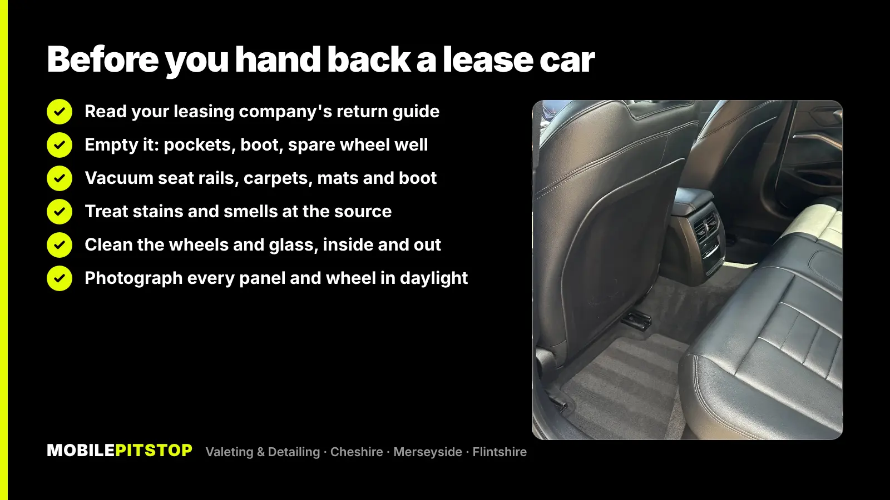
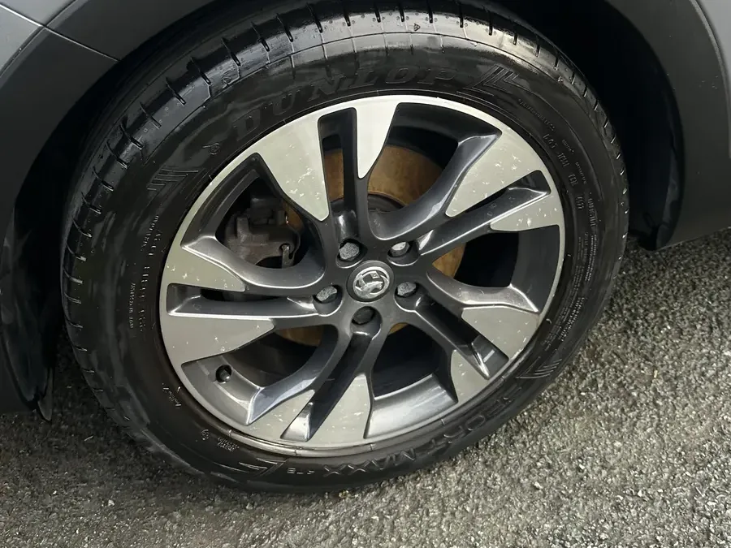
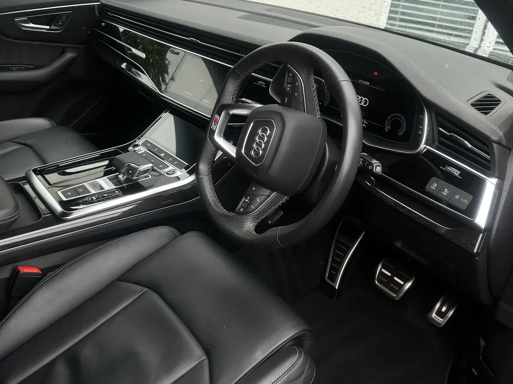

Hand a lease car back clean. Most leasing companies inspect the car at collection against a fair wear and tear standard, and dirt hides what they're looking for. A grubby interior or brown wheels can get a car marked down, or a cleaning charge added, for things a proper clean would have sorted.
Cleaning won't fix everything, though. Stains, smells, pet hair, brake dust and light swirls usually can be dealt with. Tears, burns, kerbed alloys, dents and deep scratches can't, and no valet should tell you otherwise.
Below is what inspectors tend to look at, what a clean can and can't fix, what you can do yourself, and when to book so the car is at its best on collection day.
Every leasing company has its own return guide, and your agreement is the final word, so read it before you start. Many work from a fair wear and tear standard that separates normal ageing from damage. In practice, the inspector walks round the car and through the cabin looking at:
A clean car doesn't hide damage, and it shouldn't try to. What it does is show the inspector a car that's been looked after, so ordinary wear reads as ordinary wear.
This is the part worth being honest about, because it decides where your money goes.
| Problem | Can a clean fix it? |
|---|---|
| Grit, crumbs and dirt in carpets and seat rails | Yes |
| Food, drink and mud stains on fabric | Usually, with shampoo and extraction |
| Dog hair woven into carpet and boot lining | Yes, with the right tools and time |
| Smoke, pet or spilt-milk smell | Usually, by removing the source and treating the vents |
| Brake dust and road film on wheels and paint | Yes |
| Light swirls and dull, hazy paint | Most of them, with a machine polish |
| Tears, burns or holes in seats | No: that's repair, not cleaning |
| Kerbed alloys, dents, deep scratches | No: wheel refurb or body shop |
If there's damage on that bottom list, it's worth getting a repair quote and comparing it with what your leasing company would charge, so you can decide which is cheaper. That's a separate job from the clean.
If the car has been kept reasonably tidy, a good afternoon on the driveway goes a long way. Work top to bottom, inside first, so you're not dropping dust onto parts you've already done.


A household vacuum and a wipe-down won't pull stains out of seat foam, shift dog hair that's woven into the boot carpet, or get rid of a smell that lives in the fabric and the vents. Air fresheners are the usual mistake: an inspector can smell the freshener and whatever it's covering. Our posts on getting rid of cigarette smell, damp and musty smells and dog hair in car seats explain why, and what does work.
For most lease returns the In & Out Deep Clean is the right job, because inspectors look at both halves of the car. On our jobs that means:

If only the cabin is tired, an Interior Deep Clean may be enough. If the car smells of smoke, pets or a spill, odour removal deals with the source, not just the surface. And if the paint looks dull or swirled, a single-stage machine polish removes most light swirls and water marks. It won't remove deep scratches, so check what your return guide counts as damage before paying for one.
Not sure what yours needs? Send a few photos in daylight and we'll tell you straight which service the car needs, including when a cheaper one will do.
Aim for a few days to a week before collection, not the morning of it. That leaves time for seats and carpets to dry fully after extraction, for a smell treatment to air out, and for you to spot anything that needs a repair quote. Keep the car clean until it goes: park it somewhere sensible, and in winter, one wet run on gritted roads round Chester or the Wirral can undo the outside in a day.
On collection day, take your own photos of every panel, each wheel and the interior in good daylight. If anything is disputed later, you'll have a record of how the car left you.